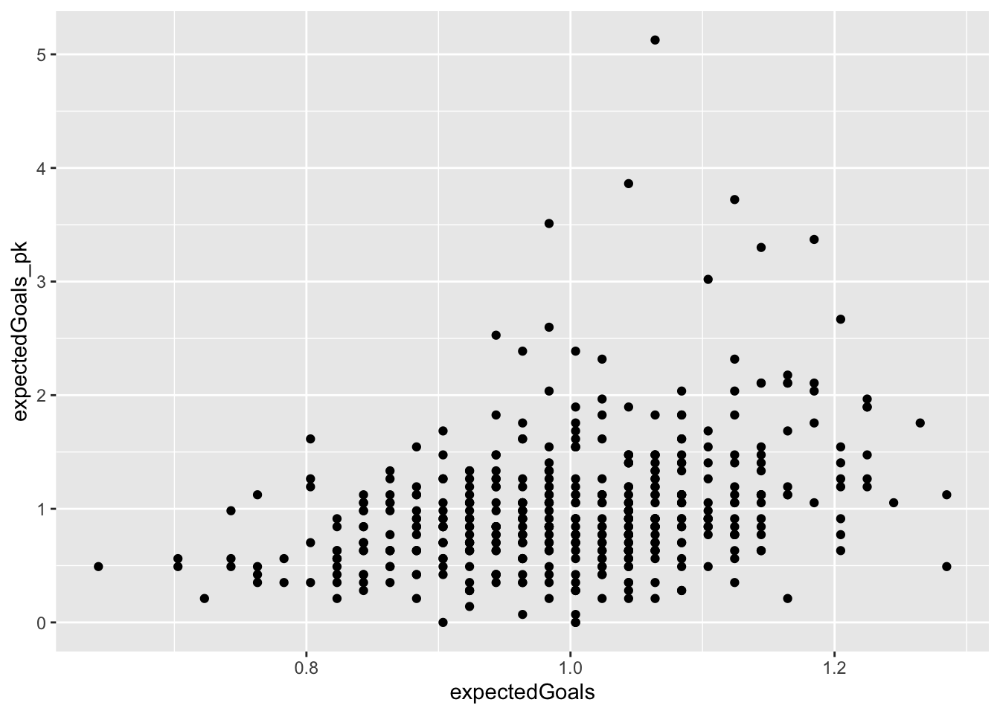
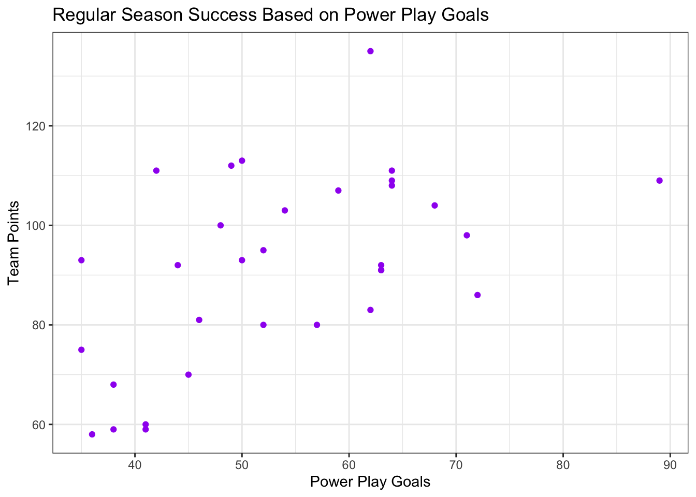

To begin exploring the central question of how power play play relates to the success of a hockey team in the NHL, I looked at data on different metrics for each player in the 2022 season. For each player the value of each evaluation metric is separated into a metric for the time played regular 5 on 5, a metric for the time played on a power play, a metric for the time played on a penalty kill, and a metric for the time played in situations that do not fit into any of these categories. The data used only contained players that reached a certain threshold for total playing time as explained in the Data Cleaning tab. The data was separated into power play and regular play data frames so that the regular play data set includes the value of each metric for every player during regular play and the power play data set includes the value of each metric for every player during power play minutes.
Code
library(tidyverse)
── Attaching core tidyverse packages ──────────────────────── tidyverse 2.0.0 ──
✔ dplyr 1.1.2 ✔ readr 2.1.4
✔ forcats 1.0.0 ✔ stringr 1.5.0
✔ ggplot2 3.4.2 ✔ tibble 3.2.1
✔ lubridate 1.9.2 ✔ tidyr 1.3.0
✔ purrr 1.0.2
── Conflicts ────────────────────────────────────────── tidyverse_conflicts() ──
✖ dplyr::filter() masks stats::filter()
✖ dplyr::lag() masks stats::lag()
ℹ Use the conflicted package (<http://conflicted.r-lib.org/>) to force all conflicts to become errors
After importing the datasets, I selected nine variables (expectedGoals, Corsi, shotAttempts, points, goals, faceoffsWon, takeaways, giveaways, and hits) to look at summary statistics for. I chose these seven variables because they are different from each other and correspond to noticeable moments on the ice. I first looked at summary statistics for regular play which can be seen below.
expectedGoals corsi shotAttempts points
Min. :0.3200 Min. :0.3800 Min. : 45.0 Min. : 2.00
1st Qu.:0.4600 1st Qu.:0.4700 1st Qu.:128.0 1st Qu.:14.00
Median :0.5000 Median :0.5000 Median :173.0 Median :20.00
Mean :0.4981 Mean :0.4983 Mean :181.3 Mean :22.38
3rd Qu.:0.5300 3rd Qu.:0.5300 3rd Qu.:219.0 3rd Qu.:29.00
Max. :0.6400 Max. :0.6500 Max. :443.0 Max. :65.00
goals faceoffsWon takeways giveaways
Min. : 0.000 Min. : 0.00 Min. : 1.00 Min. : 2.00
1st Qu.: 4.000 1st Qu.: 0.00 1st Qu.:15.00 1st Qu.:16.00
Median : 7.000 Median : 4.00 Median :22.00 Median :25.00
Mean : 8.376 Mean : 89.22 Mean :24.51 Mean :26.92
3rd Qu.:12.000 3rd Qu.:113.50 3rd Qu.:32.00 3rd Qu.:35.00
Max. :34.000 Max. :739.00 Max. :77.00 Max. :89.00
hits
Min. : 5.0
1st Qu.: 43.0
Median : 69.0
Mean : 81.2
3rd Qu.:108.0
Max. :302.0
Before creating summary statistics for the power play data I found the distribution of ice time minutes and removed players who were in the bottom 25% of players by icetime during power plays.
Code
summary(pp_data$icetime)
Min. 1st Qu. Median Mean 3rd Qu. Max.
1 414 4313 5874 10288 19733
Code
#remove bottom 25% of players by ice timepp_data <- pp_data %>%filter(icetime >414)
Typically, a team will have two set power play units (totaling 10 players) that play the entire power play so I sought to exclude players who may have played a couple of shifts throughout the season but were not part of the main power play strategy.
Code
#summarize all metricssummary_data_pp <- pp_data %>%subset(select=c(expectedGoals,corsi,shotAttempts,points,goals,faceoffsWon,takeways,giveaways,hits)) %>%summary()summary_data_pp
expectedGoals corsi shotAttempts points
Min. :0.2400 Min. :0.6000 Min. : 0.0 Min. : 0.000
1st Qu.:0.8200 1st Qu.:0.8300 1st Qu.: 9.0 1st Qu.: 1.000
Median :0.8700 Median :0.8600 Median : 34.0 Median : 7.000
Mean :0.8502 Mean :0.8509 Mean : 43.8 Mean : 9.434
3rd Qu.:0.9000 3rd Qu.:0.8800 3rd Qu.: 67.0 3rd Qu.:14.000
Max. :1.0000 Max. :1.0000 Max. :208.0 Max. :64.000
goals faceoffsWon takeways giveaways
Min. : 0.000 Min. : 0.0 Min. : 0.000 Min. : 0.000
1st Qu.: 0.000 1st Qu.: 0.0 1st Qu.: 0.000 1st Qu.: 1.000
Median : 2.000 Median : 1.0 Median : 1.000 Median : 3.000
Mean : 3.226 Mean : 15.4 Mean : 1.262 Mean : 3.941
3rd Qu.: 5.000 3rd Qu.: 10.0 3rd Qu.: 2.000 3rd Qu.: 6.000
Max. :30.000 Max. :195.0 Max. :10.000 Max. :27.000
hits
Min. : 0.000
1st Qu.: 0.000
Median : 1.000
Mean : 1.879
3rd Qu.: 3.000
Max. :15.000
Power play and Regular Play Summary Comparison
All seven of the variable that we are looking at in this analysis (expected goals, Corsi, shot attempts, points, goals, face offs won, takeaways, giveaways, and hits) have the distribution of values skewed higher when looking at data from power play minutes. This is an intuitive and expected result for many of the metrics related to taking shots because having a one man advantage does mean teams on power plays are more offensively motivated and focused. This is more surprising for the variables like takeaways, giveaways, and hits which are not explicitly offensive stats. The increase in value for these variables implies that there may be more action (and essentially more hockey) occurring during power play minutes than during other minutes during a game.
Normalization of Data
The seven variables we are looking at all have different scales with some metrics using values between 0 and 1 to represent percentages (like Corsi) and other variables simply being a count of occurrences (like hits and takeaways). To better compare the variables to each other and to regular season success, I normalized all of the variables by dividing each value by the mean so that they are on the same scale.
ID name team expectedGoals corsi
615 615 615 0 0
shotAttempts points goals faceoffsWon takeways
0 0 9 95 2
giveaways hits
3 8
Code
#faceoffs won has a lot of outliers
For regular play data, most variables had fewer than 10 outliers out of 615 observations, but faceoffsWon has 95 observations that fall outside of 3 standard deviations from the mean. There were no extreme values that seemed impossible in the original dataset, so the outliers are not likely to be from a case of measuring and recording incorrectly so I did not decide to remove or replace them.
ID name team expectedGoals corsi
461 461 461 0 0
shotAttempts points goals faceoffsWon takeways
17 19 38 54 47
giveaways hits
23 28
Code
#most metrics have larger number of outliers for powerplays than regular play
For power play data, the number of outliers in most variables is higher than for the corresponding variable in the regular play data. This indicates that there are more extremes during power plays than during regular play. Again, I did not remove or replace outliers because they do not seem to be recording errors and may be informative for answering questions.
Compare Regular Play and Powerplays
Code
#join pp data with regular datacolnames(norm_pp_data) <-c("ID","name","team","expectedGoals_pp","corsi_pp","shotAttempts_pp","points_pp","goals_pp","faceoffsWon_pp","takeaways_pp","giveaways_pp","hits_pp")df.1<-left_join(norm_pp_data, norm_regular_data, by="ID")
Code
#compare metric values between regular play and powerplays for all playerslibrary(ggplot2)library(gridExtra)
Attaching package: 'gridExtra'
The following object is masked from 'package:dplyr':
combine
Looking at the scatterplots for each variable it seems that some of the metrics are relatively correlated between the power play data and the regular play data. The variables that seem the most linearly correlated are shot attempts, points, and goals. Shot attempts, points and goals are some of the earliest recorded metrics in ice hockey and are very easy for a casual viewer to track and understand. The more advanced metrics such as Corsi and Expected goals percent and less commonly tracked metrics such as hits and takeaways seem to be less correlated between power play minutes and regular minutes for the same players.
Heat map of Correlation between Variable
Code
library(reshape2)
Attaching package: 'reshape2'
The following object is masked from 'package:tidyr':
smiths
The heatmap of correlation indexes between each of the variables show that faceoffs won in regular play and faceoffs won in power plays are fairly strongly correlated, however a lot of the other metrics have a much lower correlation values like expected goals and Corsi.
Compare Power play Success to Team Record
Now that I have determined which variables are the most correlated for players between their time playing in regular play and their time playing during power plays, I want to evaluate just how important success on a power play is for a team. To do this I will be comparing success rate on power plays (which is defined as the percentage of team power plays which result in a goal) and the team’s record for the season. In the NHL, a teams standings within the league are determined by a value called points. Teams get 2 points for every game won in regulation or overtime/shootouts, 1 point for games lost in overtime/shootouts, and 0 points for games lost in regulation. To compare power play success to record, I am looking at a plot of team points against power play success rate.
Code
#load team data and team record datateam_data <-read.csv("../data/01-modified-data/team_record_clean.csv")
Code
#compare powerplay success to overall season successggplot(data=team_data) +geom_point(aes(x=ppPercent, y=points), color="purple") +theme_bw() +labs(title="Regular Season Success Based on Power Play Success", x="Power Play Percent", y="Team Points")

There appears to be a fairly significant correlation between power play success percentage and regular season team success. This highlights the importance of having strong players with strong metrics on the power play for a team to have success.
In addition to power play success, I compared the pure number of goals a team scores on the power play to their regular season team points. Using number of goals on power plays also accounts for the number of playoff opportunities a team gets throughout the season.
Code
ggplot(data=team_data) +geom_point(aes(x=ppGoals, y=points), color="purple") +theme_bw() +labs(title="Regular Season Success Based on Power Play Goals", x="Power Play Goals", y="Team Points")

The scatter plot comparing regular season team points to number of goals scored on power plays is very similar to the above scatter plot of power play success percentage and regular season team success. This further emphasizes the importance of a strong power play for overall team success.
Conclusions and Hypothesis
Based on the exploration of this data, we can conclude that power play success (in several different metrics) does relate to team success so evaluating teams success and quality during power plays should reveal predictors for regular season success. Additionally we learned that players don’t necessarily have equally strong metrics in regular play and power play minutes. Combining these two results, I am hypothesizing that using metrics from power play data can provide different results when predicting the level of success a team will have at the conclusion of the regular season.